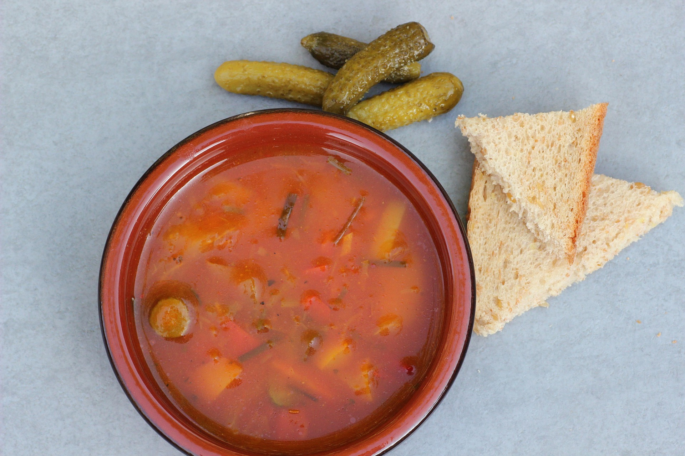

Soljanka
35 Min.
Mittel
14.10.2025
Zutaten für
- 500g Rindfleisch
- 500g Schweinefleisch
- 5 EL Tomatenmark
- 3 große Zwiebel
- 2 Glas Letscho (ca. 720g)
- 1 Glas Gewürzgurken (ca. 700g)
- 700ml passierte Tomaten
- 1L Wasser
- 1 TL Paprikapulver (edelsüß)
- 1 Becher Schmand oder Saure Sahne (optional)
- 1 Zitrone (optional)
- Salz und Pfeffer nach Geschmack
- Öl zum Anbraten
Zubereitung
Zubereitung: ca 10 min
Gesamt: ca 35 min
Zuerst das Fleisch vorbereiten, indem es in kleine, mundgerechte Stücke geschnitten wird. Die Zwiebel schälen und ebenfalls fein würfeln. In einem großen Kochtopf etwas Öl erhitzen, um den Boden zu bedecken. Die gewürfelten Zwiebeln darin anschwitzen, bis sie durchscheinend sind. Das zerkleinerte Fleisch hinzufügen und mitbraten. Nun das Tomatenmark einrühren und vermischen. Anschließend das Letscho und die passierten Tomaten dazugeben. Mit Wasser auffüllen und die Suppe zum Kochen bringen. Die Gewürzgurken in kleine Würfel schneiden und zusammen mit dem Gurkenwasser in den Topf geben. Die Soljanka mit Paprikapulver würzen und mit Salz abschmecken. Die Suppe etwa 15 Minuten bei geringer Hitze köcheln lassen. Wurde rohes Fleisch verwendet, ist eine längere Kochzeit nötig als bei bereits gegrilltem Fleisch am besten probieren, bis das Fleisch weich ist. Zum Servieren die Soljanka mit einem Löffel Schmand oder Saurer Sahne und einer halben Zitrone anrichten. Dazu passt frisches Weißbrot oder Toastbrot.
Rezept erstellt von

Rudolf Schultz